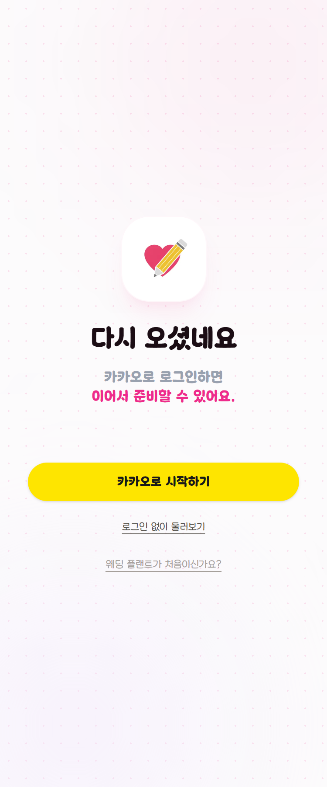
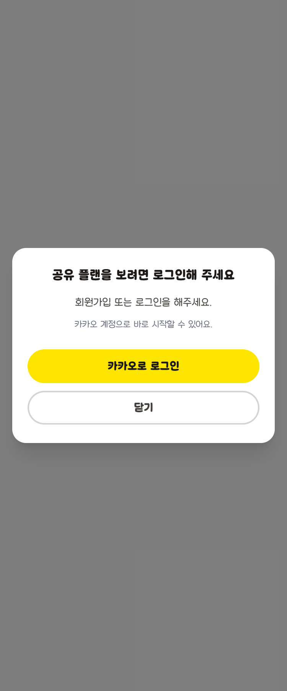

C안 · 11
로그인 · 초대 수락
둘 다 들어오는 문입니다. 안에 들어와야 볼 것이 있는 화면이 아니라, 들어올지 말지를 정하는 화면입니다. 그래서 면을 머리에만 두지 않고 화면 전체로 폅니다 — C안에서 이 둘만 그렇습니다.

다시
오셨네요
카카오로 로그인하면
이어서 준비할 수 있어요.

초대를 받았어요
지수 · 현우 님이
함께 준비하자고 해요
일정과 예산을 같이 보고, 같이 고칠 수 있어요.
초대 화면이 가장 크게 바뀝니다
지금은 회색 배경 위에 "공유 플랜을 보려면 로그인해 주세요" 모달 하나입니다. 초대받은 사람은 누가 왜 불렀는지 모른 채 로그인부터 요구받습니다 — 이 앱을 처음 보는 사람에게 가장 나쁜 첫 화면입니다.
무엇을 먼저 보여 주나
누가 불렀는지 · 결혼식이 언제인지 · 어떤 자격으로 부른 것인지.
?as=spouse 로 들어오면 신랑 · 신부, 그냥 들어오면
함께 보는 사람이라고 적습니다.
빠져나갈 길
지금의 닫기 는 눌러도 갈 곳이 없습니다. 지금은 그냥 둘러볼게요 로 바꿔 게스트 모드로 보냅니다.
지키는 것
/share/… 와 ?share=… 는 GuestGate 가 막지
않습니다 — 초대받은 사람이 처음 닿는 곳이라 막으면 초대가 끊깁니다.
/login 도 문이라 막지 않습니다. 로그인 전 401 은
skipAuthHandling: true 로 직접 받습니다.
지키는 것 — 만료 안내
SessionExpiredModal 은 / 와 /login
에서 뜨지 않습니다(SILENT_PATHS). 둘 다 로그인하러 들어오는
문이라 말이 겹칩니다. 만료로 들어온 사람에게는
?expired=1 로 제목 한 줄만 바꿔 줍니다.
카카오 버튼
카카오 노랑은 그대로 둡니다. 분홍 면 위에서 대비가 가장 큰 색이고, 무엇보다 카카오가 정한 색이라 우리가 고칠 값이 아닙니다.